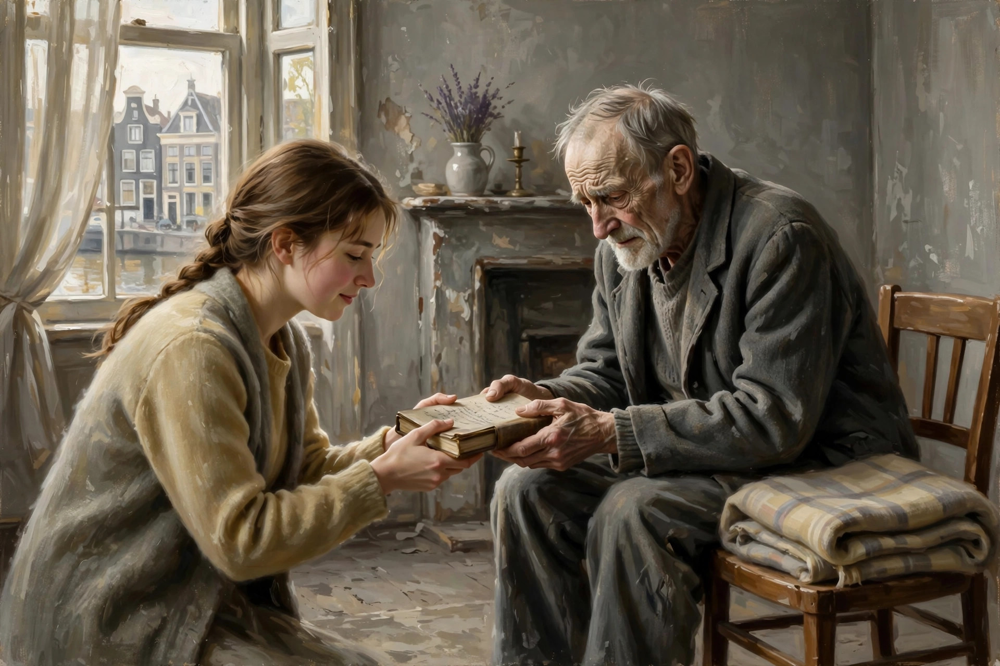

神说要有光，于是有了光
欢迎点击上方名片关注我的公众号。你的支持是我坚持原创的最大动力。
陆陆续续追完了一部前几年的剧集《乱世微光》。光听名字你可能会觉得陌生，但提起与之相关的一本书你肯定听说过（或至少有印象），那就是《安妮日记》。这部剧集虽然不是基于安妮日记的改编，但故事背景完全重合，只是视角换了一个人。不是安妮日记的主角安妮，而是好心救助安妮一家的人，梅普和杨夫妇，即本剧的男女主。

我没读过《安妮日记》的原著，所以这部剧对我而言是个新故事。我知道安妮日记的作者是历史上的真人，按其体裁来看应该也是记录的真实事件，如同另一部类似背景的作品《拉贝日记》一样。
（以下内容有剧透，请谨慎阅读）
故事背景是二战，地点是沦陷后的欧洲小国荷兰。女主梅普（Miep）是奥地利维也纳人，家境贫寒。其母亲担心养不活她把他送到荷兰的亲戚家当养女。在战争爆发之前，梅普认识了本地人杨，两人一见钟情。荷兰被纳粹占领后，梅普面临签证吊销被遣返的风险。唯一能留下来的办法是与本地人结婚。于是梅普顾不上女孩的矜持主动向杨求婚。虽然杨也很爱梅普，但发展这么快多少有点意外。但当他听了梅普的解释后也是喜出望外，欣然接受。
虽然战争期间过着清贫的生活，但两人婚后生活很甜蜜。不久，梅普收到其犹太老板奥托弗兰克的请求，将他和家人藏匿在自己家里，以躲避纳粹对他们的迫害。经过慎重考虑，梅普和杨接受了这项风险极大的请求。他们腾出家里的阁楼，在狭小的空间里藏匿了包括奥托一家在内共计八名犹太人。在长达两年的时间里，梅普和杨克服万难，不但没让人察觉藏在他们家里的犹太人，还尽其所能地好好照顾这些可怜的避难者。平时他们把通往阁楼的门关好，拿东西遮挡掩蔽。梅普负责定期外出为这些避难者采购食物和一些生活必需品，尽量不让人察觉异常。只在输送物资时才打开通往阁楼的门。
在梅普家避难的犹太人中有商人、知识份子、家庭妇女，还有两个年轻的女孩。其中一个女孩就是后来鼎鼎大名的《安妮日记》的作者安妮。安妮是个开朗乐观的女孩。她并没有因为不得不长期躲在狭窄的空间里而烦恼和灰心，反而对未来充满希望，以至于听到荷兰女王对沦陷区人民的广播就欢呼雀跃。她用日记记下避难日子的点点滴滴，也记下自己和难友的喜怒哀乐。关于安妮的视角，她的《安妮日记》就是完整的展现。而本剧的角度不是安妮，而是安妮的救助者梅普夫妇，所以对于安妮本人着墨不多。
说回梅普夫妇。梅普夫妇恁着胆大心细，在最艰难的沦陷期间，保护八位犹太人达两年之久，不能不说是奇迹。而他们（其实更多的是杨）并没有止步于此，一边小心翼翼地保护着家里的避难者，一边还和地下抵抗组织联络，试图救助更多的犹太人。这项工作主要是杨来承担。他在抵抗组织的帮助下，救助了一些犹太人的未成年子女（甚至包括婴儿）。方法是把他们送到受纳粹影响较小的乡下给愿意接收的农家收养。当然这项工作风险更大，因为需要经常抛头露面，有时甚至要冒生命危险。可每当杨意识到他所做的事可能会挽救一个个不幸的家庭，就会觉得所冒的险都是值得的。
随着挽救的生命越来越多，杨觉得自己身上的担子也越来越重。毕竟个人的力量是有限的。于是，他想加入抵抗组织的更多行动，依靠组织的力量尽可能地营救更多的犹太人。有一次抵抗组织策划一项爆破行动，目标是炸毁纳粹存放的一些犹太人的档案记录，希望借此挽救这些犹太人的生命，或至少延缓对他们的迫害。杨找到组织负责人，要求参加，但被拒绝了。负责人认为他没必要为此送命，他做的工作已经够多够危险了。但杨坚持要参加，负责人无奈勉强同意，但条件是让他去刺杀一名纳粹军官，以此测试他是否下定决心。杨毫不犹豫接受了这项挑战，他带着枪来到纳粹军官的房间门口。门一打开，他对准军官就扣动板机，却发现没子弹。原来是负责人跟他开了个玩笑。虽是为了试探他，但也没必要让他真的冒那么大险去刺杀一位纳粹军官。
杨策划这一切时一直瞒着梅普，怕她担心。虽然知道九死一生，虽然对爱人也多有不舍，但目睹了犹太同胞的巨大苦难，同时作为一位爱国者，杨毅然选择了舍小家为大家。爆破行动成功了，气急败坏的纳粹到处搜捕参与的抵抗人士。很多人因此被捕甚至牺牲。杨也从此失联，生死未卜。得知消息的梅普到处打听他的下落，最后终于在他们认识的花田那里找到了杨。两人为重逢而幸福地相拥。原来杨最后一刻还是选择了退出行动，但由于毕竟曾经参加过策划，还是躲了起来避开风头。
时间过得很快，转眼来到了1944年，纳粹德国终于到了日薄西山的时候。阁楼中的难友们一直在通过无线电了解欧洲战事的进展。有一天大家从广播中得知盟军已在法国诺曼底登陆，大家都欣喜若狂，仿佛看到了苦难的尽头。然而，他们不知道的是，悲剧悄悄地临近了。
一天，几个盖世太保突然来到梅普的家，用枪指着她的头，同时开始仔细搜查他们家。梅普他们装作若无其事，其实心慌得不得了，想不通盖世太保是怎么怀疑上他们的。到处查了一遍以后，将信将疑的盖世太保准备离开。但带队的军官偶然间瞟见靠墙的一个文件柜前面有一些可疑的痕迹。狡猾的他马上想到这里可能有暗门，立即命令挪开文件柜。在阁楼中成功躲避了两年的八名犹太人就这样全部落入了纳粹的魔掌。唯一不幸中的万幸是，梅普听到带队纳粹军官的口音是维也纳人，于是和他套近乎。后者还有点思乡之情，这才放过了梅普夫妇。
简短讲下后续及结局：八名犹太难友后来被送进了不同的集中营，从此互无音信。梅普和杨想尽办法营救他们，甚至筹钱冒险贿赂纳粹军官。但纳粹军官完全不吃这一套，钱收走，人也赶走。战争结束后，奥托从集中营回来，见到梅普他们，大家百感交集。后来，梅普他们继续寻找包括安妮在内的其他七位难友，但一无所获。最终，噩耗陆续传来，另外七名难友无一幸免，全部死在集中营。奥托悲痛欲绝，梅普不知怎么劝慰。这时她突然想起纳粹抓走八名难友后，她在收拾房间时发现了安妮的那本厚厚的日记，当时就收了起来。梅普于是拿出这本日记交给安妮的父亲奥托，希望这能带给悲痛万分的他一点慰藉。奥托看完日记后，决定把它交付给梅普出版。梅普接受了这份委托，后来出版了《安妮日记》。这部作品出版后名声大噪。梅普虽然晚年也写了一本关于安妮的书，但影响力远远不及《安妮日记》，她和杨的事迹基本默默无闻。
剧终，屏幕上打出几行字：Even an ordinary secretary or a housewife or a teenager can, in their own way, turn on a small light in a dark room.（哪怕是个普通的秘书、家庭主妇或是青少年，也能用他们的方式，在一间漆黑的屋子里点亮一点微光）
看完这部剧，我沉默了许久。历史记住了很多英雄和伟人，但真正推动人类文明进步的只是英雄和伟人吗？无数善良的普通人，就像梅普和杨一样，被淹没在历史的尘埃中。也许他们没有什么值得世人铭记的丰功伟绩，但他们作为普通人心底的那点良知、勇气在“漆黑的屋子”里点亮了一点微光。这点微光看似微不足道，但万万千千束这样的微光集中起来，也许足以照亮整个人类文明的星空。
往期精彩文章：
“为了爱梦一生”的男人
战火中的美好人性
一部电影里的人生
你以为的过气悲情励志歌手其实是幽默豁达的人生赢家
也许她的言情小说不是最好的，但她对古诗词的运用可谓登峰造极